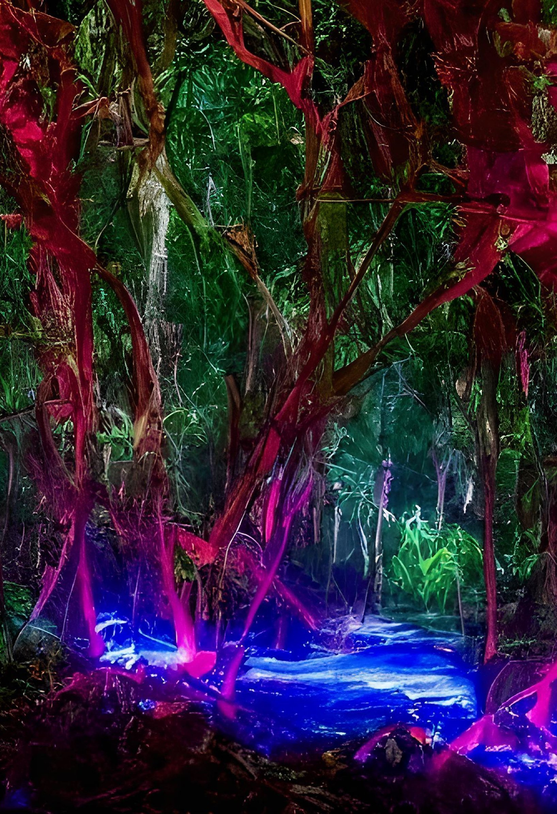
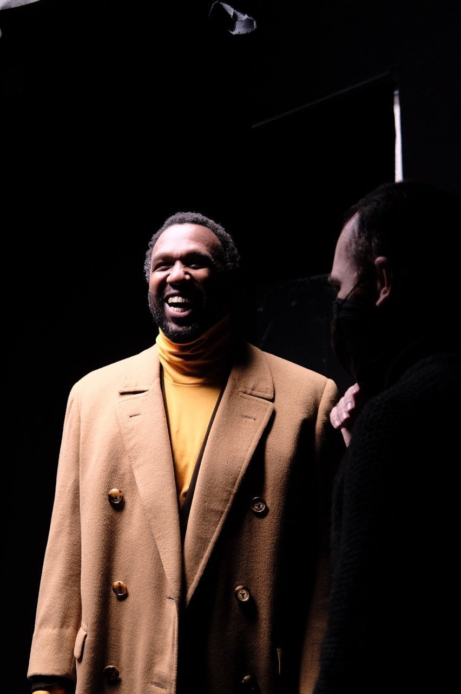
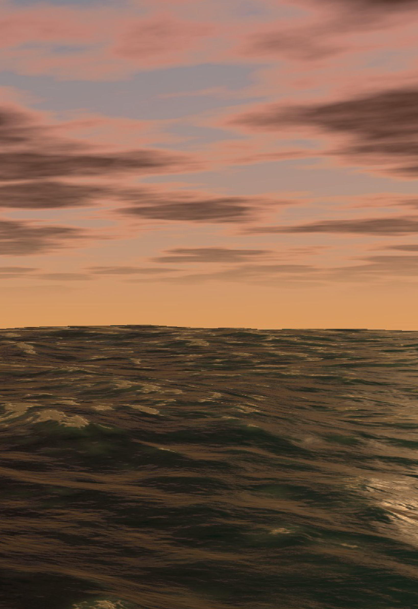
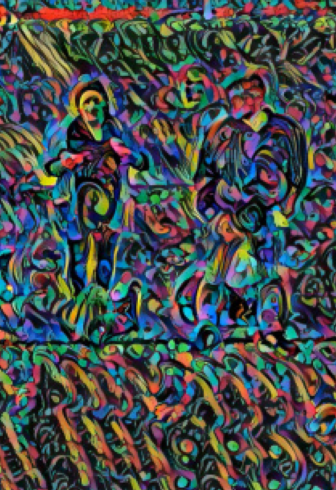
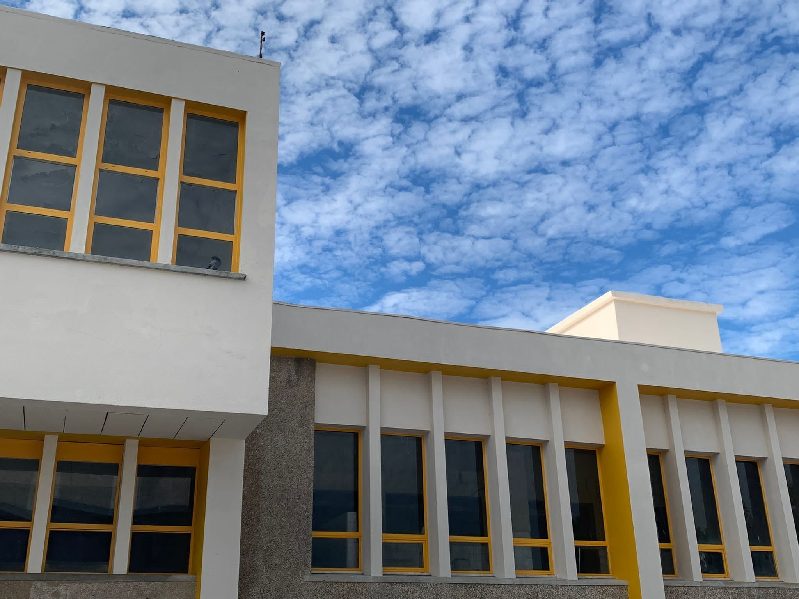
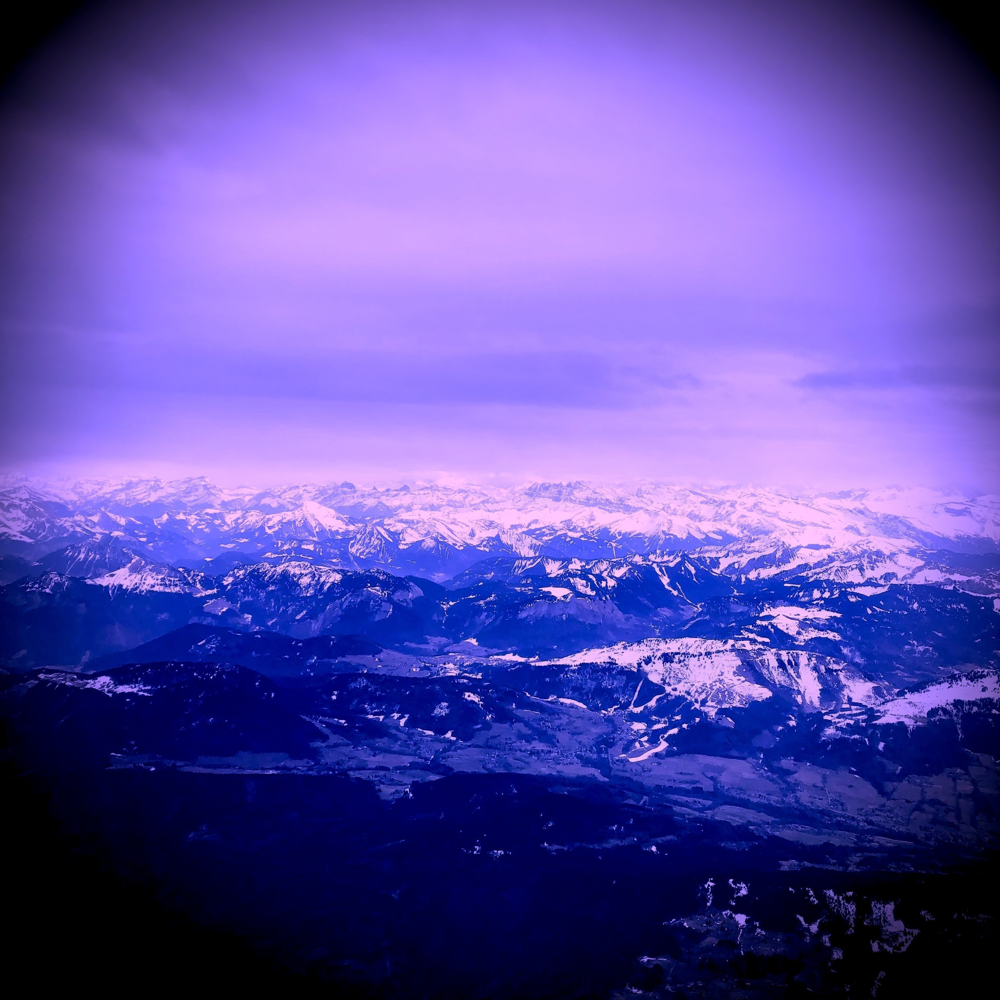

Three editions of an exhibition programme at the Champalimaud Foundation warehouse in Lisbon, part of the Bridges to the Unknown art-science programme. Organized by Joe Paton, Zachary Mainen, and John Krakauer. The name combines metamers — perceptually identical stimuli with distinct physical origins — and immersion.
The warehouse (Doca Pesca F, Avenida Brasília) became a space where neuroscience, art, and technology intersected without hierarchy. Artists were not illustrating research. Scientists were not validating art. The question was shared: how does immersive experience work, and what can it do?
Part of the Champalimaud Foundation’s Bridges to the Unknown programme, coordinated by Julia Salaroli and Patricia Correia. Free and open to the public.





